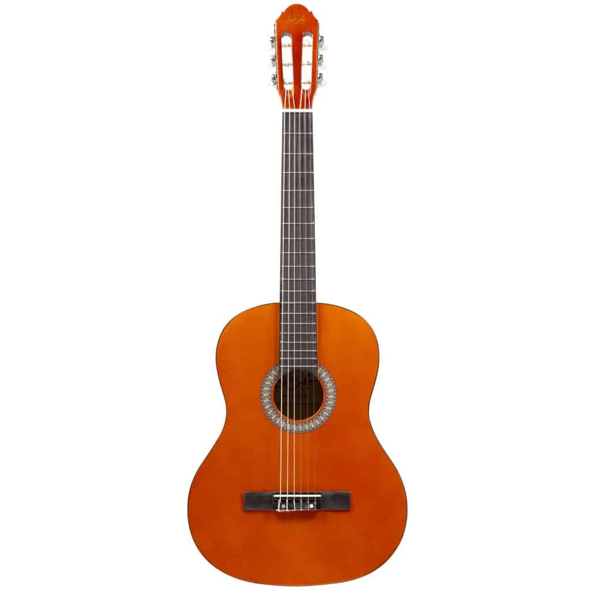

BOTHNERS
WHO ARE WE ?
The company's South African origings date back to around 1902, when Charles Bothner, a piano turner by trade , emigrated from Switzerland and set up shop in Cape Town.The business was soon importing and selling pianos.
Bothners store offers a full range of musical instruments, live performance, content creation, recording equipment.Our sales staff are all experienced musicians and offer friendly advise and professional after-sales service.
CHECK OUT OUR ITEMS:
